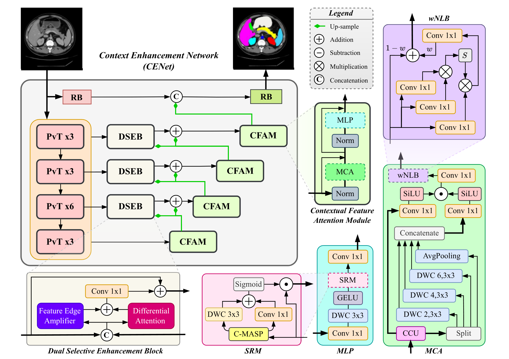
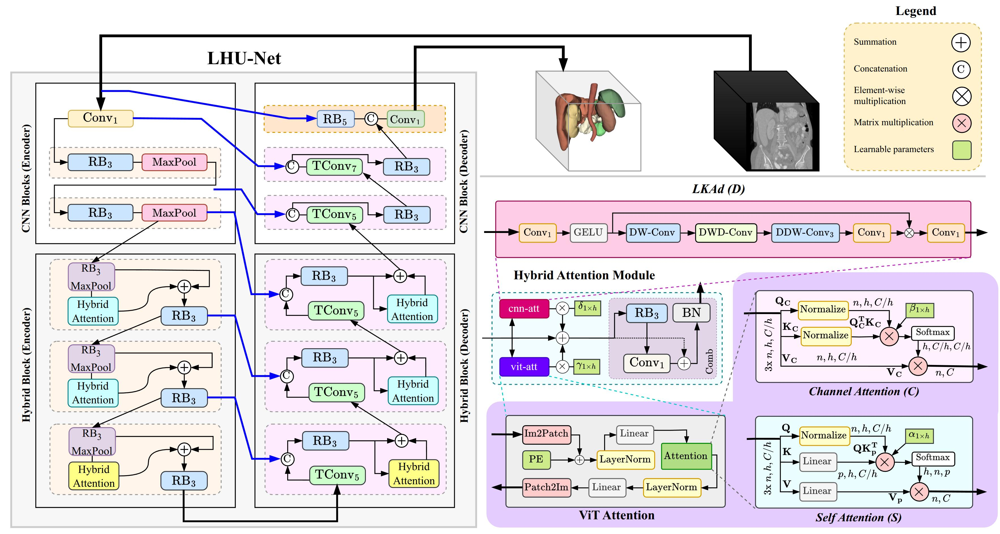
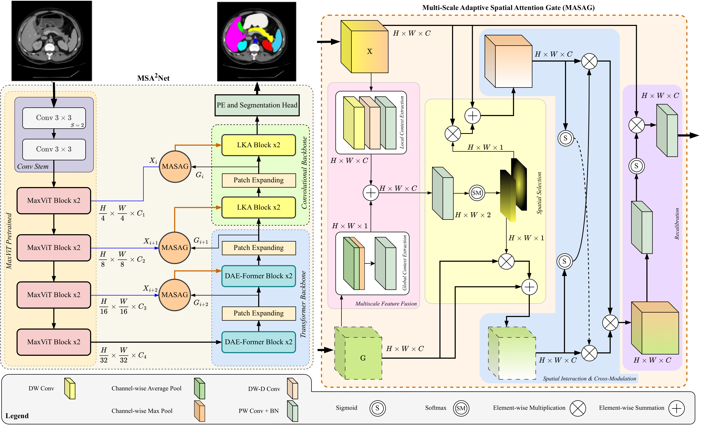
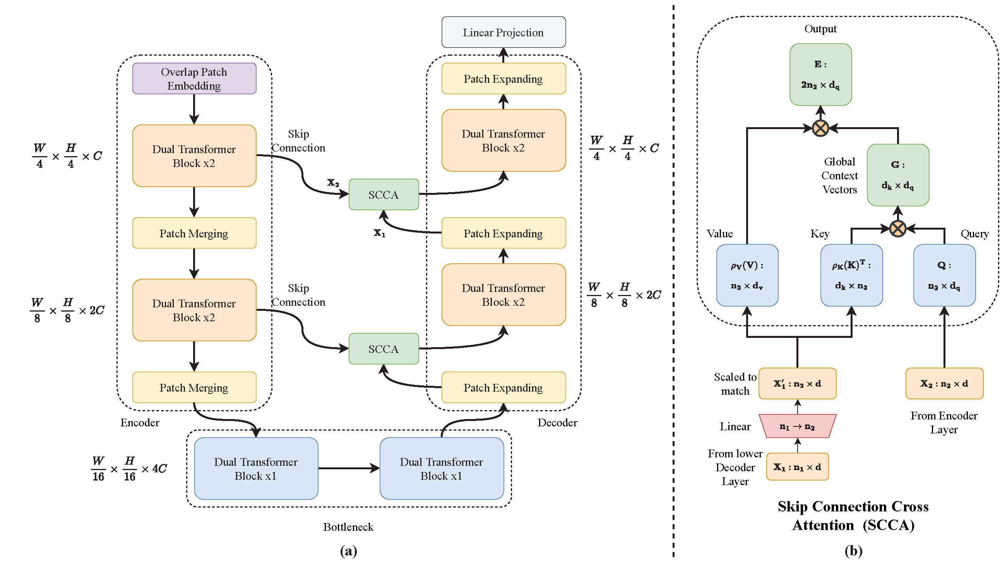
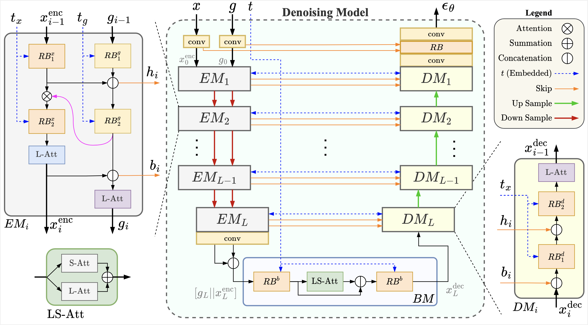

About
Models that are small, honest, and useful where data is hard.
I'm a vision researcher. I started with geometry and tracking for sports video, moved into medical imaging and pathology where labels are scarce and mistakes matter, and now I'm working toward models that see, reason and write: vision-language models, agents and 3D.
The thread through all of it is efficiency and reliability: architectures that fit in the memory you actually have, and results you can trust outside the benchmark. I work at the University of Regensburg in the group of Prof. Dorit Merhof, in a DFG-funded project with clinical collaborators, and I publish mostly at MICCAI and related venues. I also reviewed for MICCAI, Medical Image Analysis and WACV, and I enjoy helping other people get their first strong paper out.
Right now
Questions I'm chasing
01
Can a vision-language model write a report that is grounded in what it actually looked at?My main focus: report generation where every sentence points back to image evidence, starting with pathology and radiology, with benchmarks and open code so others can build on it.
02
How do we adapt large foundation models without the large bill?Low-rank, quantization and parameter-efficient methods, plus state-space and xLSTM-style sequence models, building on my work on accuracy per FLOP.
03
Which parts of a vision pipeline can an agent take over safely?Annotation, retrieval and quality control with LLM/VLM agents, and how to measure when they fail.
04
How cheap can 3D understanding get?Point-cloud and rendering-based models that keep geometry without the memory bill, building on my earlier work in homography and tracking.
Selected work
Papers and code
A few projects I'm proud of, grouped by the problem they address. The full list is on Google Scholar.
Efficient segmentation architectures
Do more with the same compute


MICCAI 2023 · co-author
DAE-Former: dual-attention efficient Transformer
Efficient attention that keeps both spatial and channel information.
Generative and sequence models
Boundaries, diffusion, Vision-LSTM
MICCAI MLMI 2026
MaLViL: multi-axis low-rank Vision-LSTM
Compresses the sequence model along several axes to cut cost for segmentation.
Pathology and cytology
Clinical collaborationI also help maintain curated reading lists at X-MindFlow on foundation models, state-space models and implicit neural representations in medical imaging.
Open collaboration
Want to work on a paper together?
I regularly work with students and researchers from different countries and levels, from undergraduates to Ph.D. students and engineers moving into research. The goal is simple: pick a good problem, do it properly, and end up with a paper you are proud to put your name on, aimed at venues like CVPR, ICCV, ICLR, NeurIPS or MICCAI.
What you get
- Co-authorship on the paper
- Regular meetings and honest feedback on ideas, code and writing
- Working starter code, and help finding compute
- A recommendation letter if the work earns it
What I look for
- Solid Python and PyTorch
- Commitment to a defined period
- Real motivation and seriousness
- English good enough to write a paper
How it works
- Send me a short emailWho you are, your background, a link to some code you wrote, and what you'd like to explore.
- We talkA short call to see whether the topic and the timing fit.
- Scope a problemOne question you can realistically answer within your time window.
- Work in a weekly rhythmExperiments, reviews, and writing, with a deadline in mind.
This is unpaid academic collaboration, so I can't offer funding or visas.
afshinbigboy [at] gmail [dot] com
Path & beyond
Where I come from
Research assistant · University of Regensburg2024 – present, DFG-funded, Prof. Dorit Merhof
Research assistant · Regensburg and RWTH Aachen2021 – 2024, segmentation and generative models in 2D and 3D
M.Sc., Information Technology Engineering · University of Tehran2017 – 2021, first in the cohort. Thesis on inferring tumor evolution from genomic data (computational biology), plus work on reinforcement learning and MCMC
B.Sc., Information Technology Engineering · Sharif University of Technology2010 – 2016, thesis on homography and tracking in football video
Beyond the papers: I co-supervise B.Sc. and M.Sc. projects, assist in teaching digital image processing, and co-founded a startup before research took over. I speak English, Persian and some German. Off the screen: swimming, billiards, motorcycles, and the occasional video game.